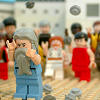

|
|
|
Acts 14
|
|
| 14:1
And it came to pass in Iconium, that they went both together into the
synagogue of the Jews, and so spake, that a great multitude both of the Jews
and also of the Greeks believed. |
 (14:2-5) "The unbelieving Jews" stir up
trouble again for Paul and incite the people to try to stone him to death. (14:2-5) "The unbelieving Jews" stir up
trouble again for Paul and incite the people to try to stone him to death.
(14:2) "The unbelieving Jews stirred up the Gentiles, and made their minds evil affected against the brethren."
|
| 14:2
But the unbelieving Jews stirred up the Gentiles, and made their minds evil affected against
the brethren.
|
| 14:3
Long time therefore abode they speaking boldly in the Lord, which gave
testimony unto the word of his grace, and granted signs and wonders to be
done by their hands.
|
| 14:4
But the multitude of the city was divided: and part held with the Jews,
and part with the apostles. |
|
| 14:5
And when there was an
assault made both of the Gentiles, and also of the Jews with their rulers,
to use them despitefully, and to stone them, |
(14:5) "When there was an assault made both of the Gentiles, and also of the Jews with their rulers,
to use them despitefully, and to stone them."
|
| 14:6
They were ware of it, and fled unto Lystra and Derbe, cities of Lycaonia,
and unto the region that lieth round about: |
|
| 14:7
And there they preached the gospel. |

 (14:8-10) Paul heals a crippled man. (14:8-10) Paul heals a crippled man.
(14:8) "There sat a certain man ... a cripple from his mother's womb, who never had walked."
(14:9-10) "Paul ... perceiving that he had faith to be healed, Said with a loud voice, Stand upright on thy feet. And he leaped and
walked."
(14:11-12) The people of Lystra thought Paul and Barnabas were the gods,
Jupiter and Mercury.
(14:11) "When the people saw what Paul had done, they lifted up their voices, saying ... The gods
are come down to us in the likeness of men."
(14:12) "They called Barnabas, Jupiter; and Paul, Mercurius."
(14:14) "When the apostles, Barnabas and Paul, heard of, they rent their clothes."
|
| 14:8
And there sat a certain man at Lystra, impotent in his feet, being a
cripple from his mother's womb, who never had walked:
|
| 14:9
The same heard Paul speak: who stedfastly beholding him, and
perceiving
that he had faith to be healed,
|
| 14:10
Said with a loud voice, Stand upright on thy feet. And he leaped and
walked.
|
| 14:11
And when the people saw what Paul had done, they lifted up their voices,
saying in the speech of Lycaonia, The gods are come down to us in the
likeness of men.
|
| 14:12
And they called Barnabas, Jupiter; and Paul, Mercurius, because he was the
chief speaker.
|
| 14:13
Then the priest of Jupiter, which was before their city, brought oxen and
garlands unto the gates, and would have done sacrifice with the people.
|
| 14:14
Which when the apostles, Barnabas and Paul, heard of, they rent their
clothes, and ran in among the people, crying out,
|
| 14:15
And saying, Sirs, why do ye these things? We also are men of like passions
with you, and preach unto you that ye should turn from these vanities unto
the living God, which made heaven, and earth, and the sea, and all things
that are therein:
|
| 14:16
Who in times past suffered all nations to walk in their own ways. |
|
| 14:17
Nevertheless he left not himself without witness, in that he did good, and
gave us rain from heaven, and fruitful seasons, filling our hearts with food
and gladness. |
|
| 14:18
And with these sayings scarce restrained they the people, that they had
not done sacrifice unto them. |
(14:19) "Jews ... persuaded the people, and having stoned Paul, drew him out of the city,
supposing he had been dead." Some Jews convince the people (who think Paul is a god) to stone Paul. So they stone Paul and throw
his body out of town, thinking he was dead.
|
| 14:19
And there came thither certain Jews from Antioch and Iconium, who
persuaded the people, and having stoned Paul, drew him out of the city,
supposing he had been dead.
|
| 14:20
Howbeit, as the disciples stood round about him, he rose up, and came into
the city: and the next day he departed with Barnabas to Derbe. |
Paul Gets Stoned
|
| 14:21
And when they had preached the gospel to that city, and had taught many,
they returned again to Lystra, and to Iconium, and Antioch,
|
| 14:22
Confirming the souls of the disciples, and exhorting them to continue in
the faith, and that we must through much tribulation enter into the kingdom
of God.
|
| 14:23
And when they had ordained them elders in every church, and had prayed
with fasting, they commended them to the Lord, on whom they believed. |
|
| 14:24
And after they had passed throughout Pisidia, they came to Pamphylia. |
|
| 14:25
And when they had preached the word in Perga, they went down into Attalia: |
|
| 14:26
And thence sailed to Antioch, from whence they had been recommended to the
grace of God for the work which they fulfilled. |
|
| 14:27
And when they were come, and had gathered the church together, they
rehearsed all that God had done with them, and how he had opened the door of
faith unto the Gentiles. |
|
| 14:28
And there they abode long time with the disciples.
|
|
|